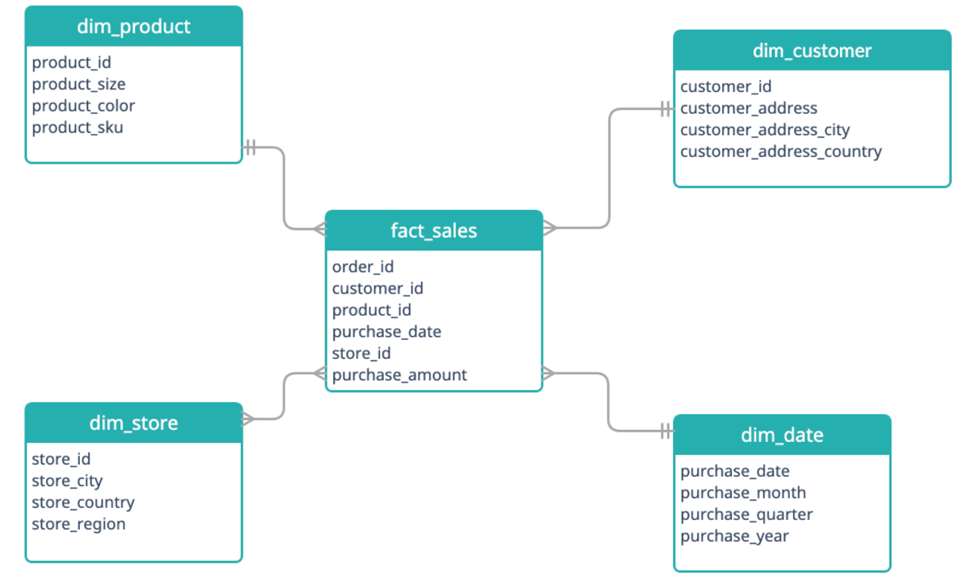
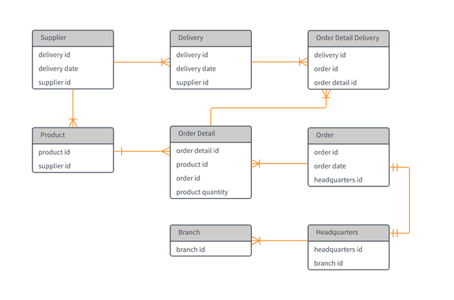

Star Schema
The star schema is one of the simples and widely used in data warehouses. It includes one or
more fact tables in the center and has its branches to multiple dimension tables. The fact
table hold a key relationship to all the dimensions in the schema. The fact table
holds quantitative information, and the dimension tables hold descriptive characteristics
related to the fact table.

The advantage to this model is that it holds simple logic for querying meaning joins are easy
to perform. It also uses OLAP which allows users to analyze data from multiple databases at
the same time.
The disadvantages are that it has reduced flexibility and data integrity is not enforced
due to the highly denormalized nature of the model.
Relational Database
Relational database models are another common database. Here you have multiple tables all
connected via a primary key/foreign key relationship. They are different than the star schema
model as they do not have a fact table. Instead, they have many dimension tables which can
all be connected. Joins on these types of tables can be significantly more complex than
star schemas as you may need to touch multiple tables to get your target table.

Relational databases are very easy to use, and you can increase your query speed drastically
with indices. They also support Atomicity, Consistency, Isolation, and Durability (ACID)
properties which enable reliable transaction processing. Relational databases also do an
excellent job or reducing redundancies. This is because generally we will see databases
with this model hold up to Boyce-Codd normal form (or 3.5NF). However, it is possible
that an organization may take their database up to 6th normal form.
Some issues with Relational Databases is that they can be very expensive to set-up
and maintain. They can also lack speed if the query is not optimized as many tables
need to be touched and computations can slow down the system.
One Big Table
One Big Table or OBT is a database model that denormalizes the database into a single large table. The
general consensus on this model is mixed as it can boost query performance as you do not need to
join multiple tables. However, you lose the consistency and redundancies as some features may
be reported as NULL instead of omitted from the table.

Exercise: Denormalize a Database
In this exercise you will take a relational database
and denormalize it into a star or snowflake schema. I would recommend breaking this into
several small steps rather than just modeling the star directly in a database. First you
may want to draw out the star schema. You can use a white board or any computer software
(such as LucidCharts). Create your fact table and begin absorbing information into the
dimension tables. Ask yourself what the main entity is and its children. For example,
can the staff and store table be combined?
Once you have your design laid out, start modeling in a database of your choice.
If you want to use a PostgreSQL or MariaDB database, you can follow one of the links
below to set one up. Otherwise, you can always use Snowflake.
To use the sample database, you will need to extract the zip file into a tar.
Once you are done, push your code to a forked branch on the truData repository.